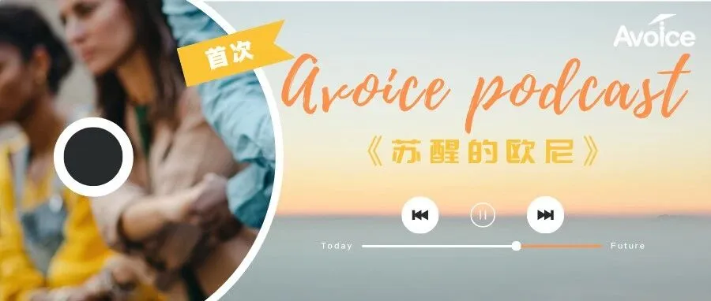
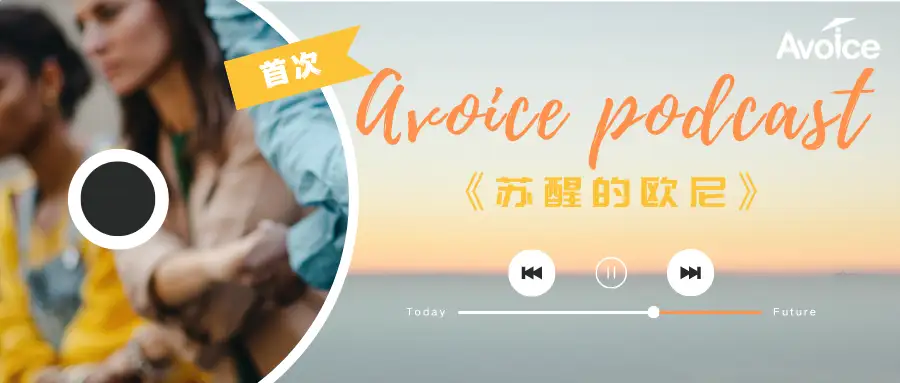
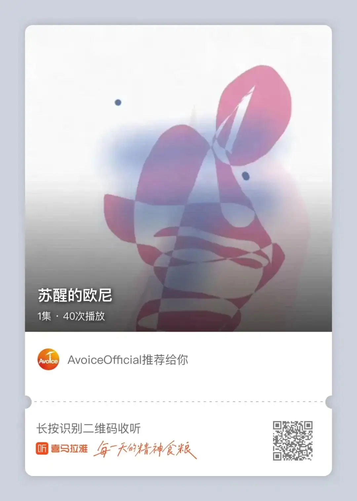
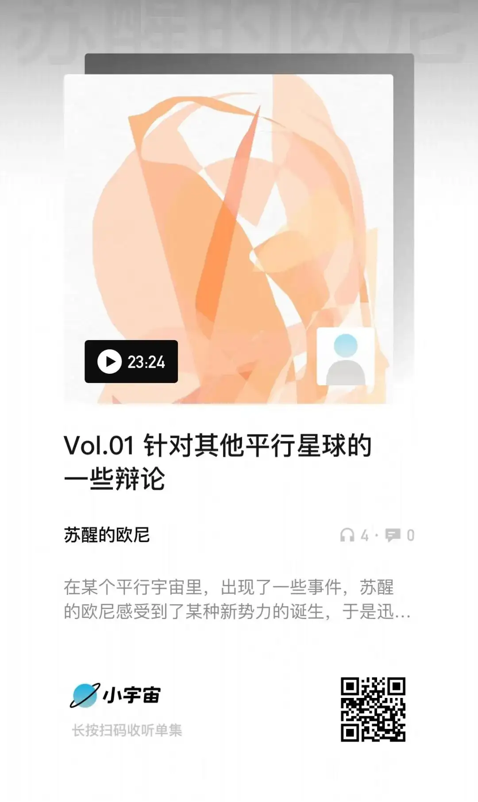

于7月16日上线的播客《苏醒的欧尼》，如今在喜马拉雅和小宇宙都可以收听了。
·
苏醒的欧尼专辑介绍
·
这是一个很久前的故事，
从一个梦中启发而得，
单纯的谎言又或是真相，
给那些愿意听的人们，
在一棵橡树附近，
一个甜睡的婴儿被遗弃在那，
在一张四方形的毯子上，
这棵昏昏沉沉的树，
伸展她的枝叶，
“摇晃着这个婴儿，
紧紧地抱住她，”
……
伟大的风之神，
我向您祷告，
请您倾听我的缘由，
请您在远方刮起，
指引这个孩童，
让她感受到愉快的清风，
请您托起她的摇篮。”
首期节目以美国反堕胎案为主题，进行了几个话题的探讨和不严肃评论。
·
提到的话题
·
01:53话题1
社会舆论热场：“正反两方观点较量”
10:04话题2
观点发散：“不应该将生育权与堕胎权完全割裂，女性享有自主生育的权利，也应该享有堕胎的权利”
13:53话题3
可能性讨论：“美国社会老龄化程度日益严重，地方或政府意欲通过限制堕胎来增加生育率与人口数量”
17:33话题4
发展导向讨论：“堕胎权的问题必定会成为政治角逐”
一位朋友提到，这样就话题智性地聊天蛮有意思的。
这是Avoice第一次策划并举办的播客节目，未来根据需要将会筹办其他系列节目或专辑。敬请期待！
扫描下图二维码，进入喜马拉雅/小宇宙平台听播客：


文案/图片 | Parapluie
排版/封面 | 徐嘉蕾